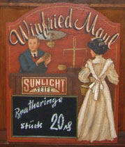

|
|||||||||||||
|  |
Entstehung Teil 2 Der Grundstein zum Museum wurde gelegt, als ein lokaler Antiquitäten-Händler einen massiven Eichenschrank, über 2 Meter hoch und 5 Meter breit samt Ladentheke fand, gebaut vor über 100 Jahren - zu einer Zeit als Schränke massiv waren und Schubfächer nicht aus Speerholz sondern 2 cm dicken Eichenbrettern gebaut wurden. Und zu einer Zeit, als die Schubfächer mit kleinen Emaile-Schilder beschrift waren - mit Bezeichnungen wie "Opium", zum Kauf im nächsten Kolonialwarenladen... Somit war es nun an der Zeit, passende Räumlichkeiten zu finden und alle gesammelten Kostbarkeiten einen würdigen Platz zu geben. Erstmals öffentlich zugänglich war das Museum 1992, seitdem kommen nicht nur die regionalen Berufsschulen vorbei, Besucher kommen aus ganz Deutschland, Berichte wurden schon im Bayerischen Fernsehen und Pro 7 gesendet.
|
||||||||||||
Das handgemalte Bild, das einen Händler beim Verkaufsgespräch zeigt, war der Hauptgewinn eines Händler-Preisausschreibens.
|
|||||||||||||

{kind=link}